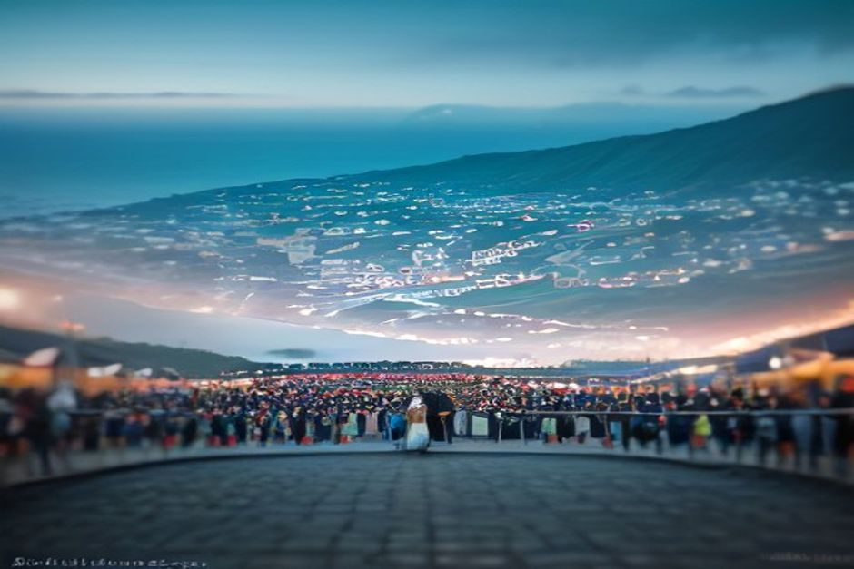

Vous cherchez les dates de la Festa do Faial 2026 ? Elle s'est tenue du 12 au 14 septembre à Faial, sur la côte nord de Madère, dans la commune de Santana. Les festas do Faial reviennent chaque année à la même période : voici ce qu'on y vit, comment s'y rendre depuis Funchal et comment organiser la journée.
Festa do Faial 2026 : dates et lieu
La fête a duré trois jours, du samedi 12 au lundi 14 septembre 2026. Elle a lieu à Faial, une paroisse de la municipalité de Santana, face à l'Atlantique.
On y honore Nossa Senhora da Natividade, Notre-Dame de la Nativité, patronne de la paroisse. Sa fête tombe le 8 septembre, et les fêtes de saints patrons de la saison des récoltes se tiennent à Madère autour de cette date. Si vous lisez ceci après l'édition 2026, visez donc les alentours du 8 septembre pour l'année suivante, et vérifiez le programme exact avant de réserver quoi que ce soit.

Une fête de village, pas un spectacle pour touristes
C'est ce qui frappe d'abord. La Festa do Faial est organisée par l'église locale et les associations de la paroisse, pour les quelque 1 500 habitants. Beaucoup de familles reviennent exprès pour l'occasion, depuis l'autre côté de l'île ou depuis la diaspora madérienne à l'étranger.
Vous n'y trouverez donc pas une animation calibrée pour les visiteurs, et c'est ce qui fait son intérêt. Vous êtes bienvenu, mais vous restez un invité : gardez la discrétion pendant la messe et la procession.
Le programme des festas do Faial, jour après jour
Le rythme est celui d'un arraial madérien, du samedi au lundi. Voici ce qu'il faut en retenir.
- Les jours précédents : des neuvaines, ces prières quotidiennes qui préparent la fête.
- Chaque journée : la messe, puis la fête de rue. Les stands proposent espetada, bolo do caco, gâteau au miel et vin local.
- Sur la scène en plein air : des groupes de folklore madérien, mais aussi des artistes régionaux et nationaux, pop ou pimba.
- Le jour du milieu, en général : la procession. La statue de Nossa Senhora da Natividade avance lentement derrière une fanfare, entre des maisons ornées de fleurs et des arches décorées. Une bonne partie du village marche dans le cortège, le reste regarde depuis le pas de sa porte.
- La dernière soirée : un feu d'artifice clôt la fête.
Je ne peux pas vous donner d'horaires précis : ils changent d'une année à l'autre et c'est le programme officiel qui fait foi.
Pourquoi ce feu d'artifice est à part
Faial se trouve juste sous Penha d'Águia, le « Rocher de l'Aigle ». Ce monolithe volcanique de près de 600 mètres sépare Faial de Porto da Cruz et domine toute cette portion de côte.
Le décor devient une sorte d'amphithéâtre naturel. Le dernier soir, les gerbes éclatent contre la paroi et l'océan sombre, et non au-dessus d'une ville. Les Madériens le citent volontiers parmi les fêtes de village les plus impressionnantes à vivre sur place.
Aller à Faial depuis Funchal
Faial est à environ 21 km au nord de Funchal. Comptez 45 à 60 minutes en voiture, selon la route choisie :
- la route côtière ER101, plus sinueuse, qui passe par São Vicente ;
- la voie express VE1/VE5, plus rapide, qui traverse en tunnel les montagnes du centre de l'île.
Il n'existe pas de bus express pensé pour les soirs de fête. Une voiture de location ou un taxi reste le plus simple. Dans un village de cette taille, le stationnement devient compliqué une fois l'arraial lancé : arrivez dans l'après-midi, avant l'affluence du soir.
Bateau le matin, fête l'après-midi : comment composer la journée
Un point à connaître : on ne peut pas aller à Faial en bateau depuis Funchal. Le village est bien au nord du littoral que couvre un bateau privé au départ de la Marina do Funchal. Il s'agit donc de deux sorties distinctes, à placer dans la même journée ou sur deux jours.
Pour combiner les deux, une formule est naturelle :
- Le matin, la côte sud-ouest en mer. Avec Chifbay, la sortie à la journée part à 10 h ou à 14 h de la Marina do Funchal, ponton C. Elle passe par Câmara de Lobos et Cabo Girão, avec baignade et paddle à la Fajã dos Padres. Comptez 2 h 30 jusqu'à Ribeira Brava (500 €) ou 3 h jusqu'à Ponta do Sol (600 €). Ces prix valent pour tout le bateau, jusqu'à 5 personnes, et non par personne.
- L'après-midi et la soirée, la route vers le nord. Avec le départ de 10 h, vous êtes de retour à Funchal en début d'après-midi et vous pouvez prendre la route de Faial. Le départ de 14 h convient mieux si vous préférez dédier une autre journée à la fête.
Si vous préférez ne pas tout enchaîner, gardez la sortie coucher de soleil pour un autre soir. Elle part 1 h 15 avant le coucher du soleil, toute l'année : 2 h jusqu'à Cabo Girão (400 €) ou 2 h 30 jusqu'à Ribeira Brava (500 €), sans arrêt baignade. Quant à la lumière ou aux dauphins, personne ne peut les promettre : ils sont un cadeau quand ils sont au rendez-vous.
Toutes les sorties incluent repas et boissons à bord, une vidéo 360° Insta360, des images de drone si la météo le permet, et des photos prises avec un vrai appareil. L'annulation est gratuite jusqu'à 24 heures avant le départ. Pour comparer les formules, voyez la page sur la sortie en bateau privé ou toutes les expériences.
Que voir autour de Faial
Faial est un vrai village de la côte nord, avec des vignes en terrasses, des bananeraies et un paysage qui ne ressemble en rien à celui de Funchal. Si vous montez pour la fête, profitez-en pour voir deux autres endroits.
- Le Miradouro do Guindaste, juste à la sortie du village. Une courte marche suffit pour avoir Penha d'Águia d'un côté et l'Atlantique de l'autre.
- Porto da Cruz, quelques minutes plus loin sur l'ER101 : plage de sable noir, piscine naturelle et spot de surf connu de longue date.
Avec ces deux étapes, la fête devient une vraie journée sur la côte nord, plutôt qu'une simple soirée.
Nos conseils pour la Festa do Faial
- Arrivez en milieu d'après-midi pour vous garer et goûter aux stands avant la foule.
- Prévoyez le retour de nuit sur des routes de montagne : que le conducteur reste sobre.
- Pour la procession, placez-vous sur le côté et laissez la place aux habitants.
- Pour organiser vos autres journées à Madère, jetez un œil à nos infos pratiques.
Le feu d'artifice de Faial éclate devant un rocher que la plupart des fêtes ne peuvent qu'envier.
La Festa do Faial n'est pas faite pour les visiteurs, et c'est son charme : une vraie fête de paroisse, sous l'un des plus beaux repères de Madère, ouverte à tous ceux qui font la route vers le nord. Pour d'autres idées de sorties, parcourez le Journal.